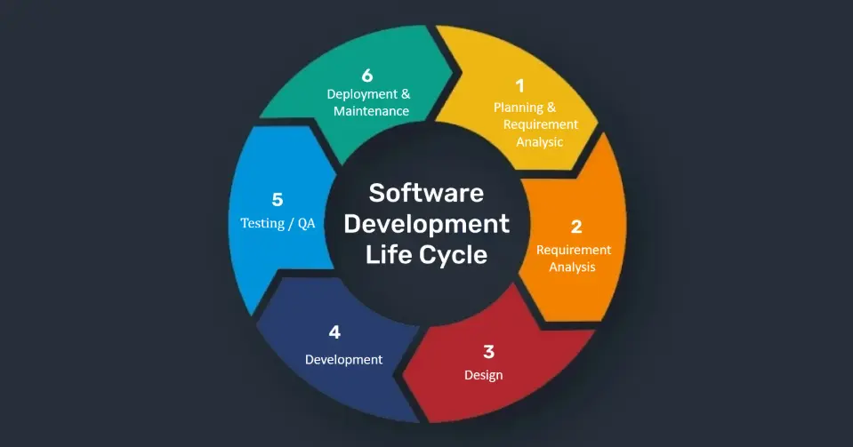
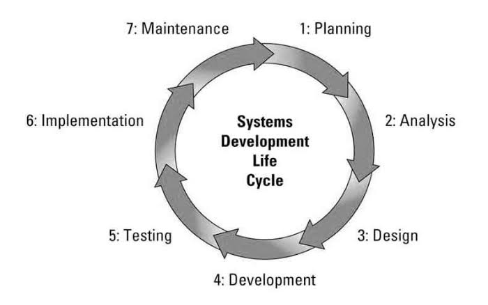
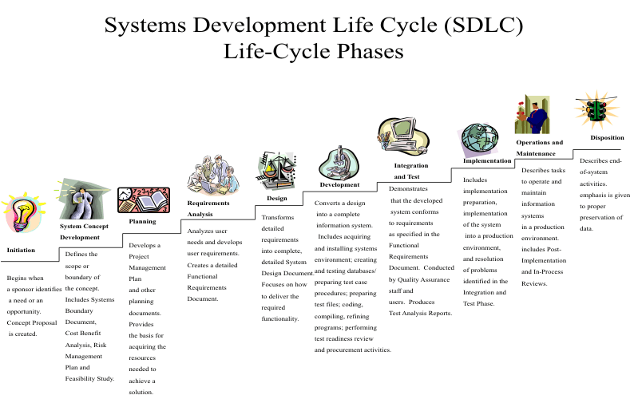
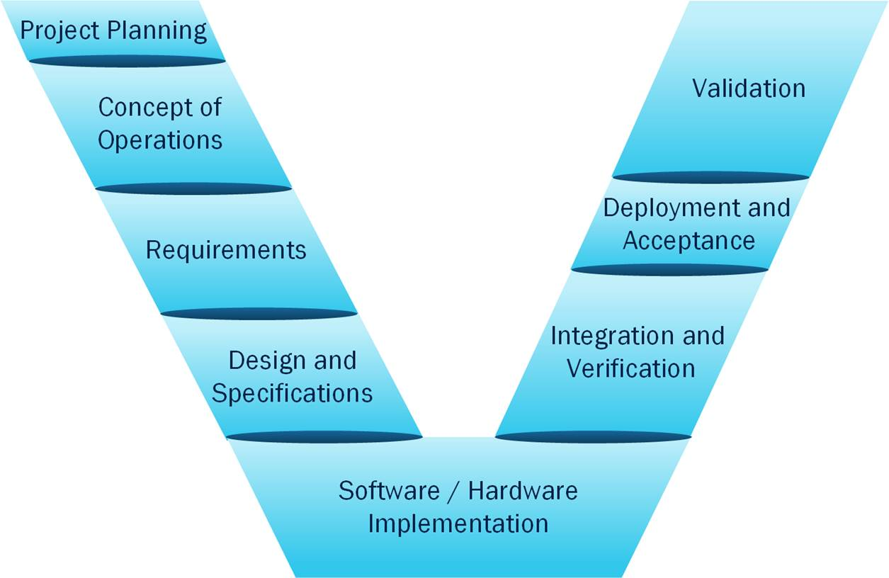
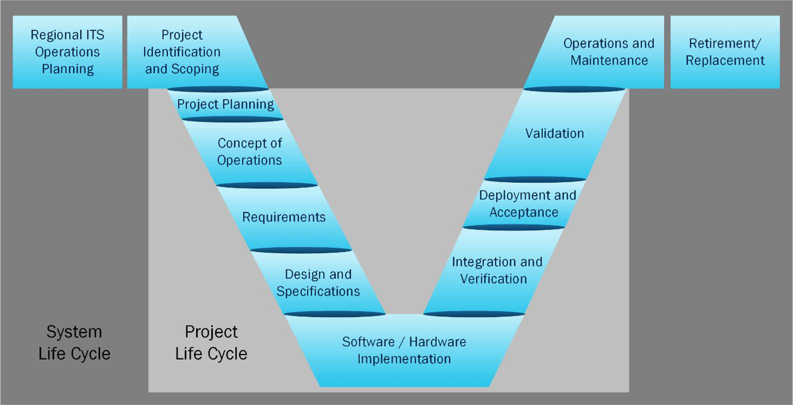

A jet can be legal in every document and still not leave. Maintenance has a status. The load planner has a weight and balance. Operations already put a departure time on the board. Each office finished its part, saved the file, and sent it on. The aircraft sits. Nothing in any one spreadsheet is obviously wrong. The failure is in the connection between them, and in how long that connection took to show up.
That gap is what systems thinking is for. It is also what a model is supposed to close, if the model is actually a model and not a nicer drawing of the same mess.
What I mean by systems thinking
When I say systems thinking, I mean the habit of explaining what a system does by looking at relationships, boundaries, and purpose, not by taking the parts one at a time. The parts are real. A brake is real. A database table is real. A maintenance record is real. The mistake is thinking you can understand any of them by studying it alone. Holt makes this the starting point of the course reading. Drawing on general systems theory, he says the parts of a system are best understood through their relationships with each other and with other systems, rather than in isolation (Holt, 2023). A system element that never interacts with anything is just an object. The interface, and whatever crosses it, is half the description.
In the jet example, the maintenance record is not the problem by itself. The problem is that the record has to reach the load planner before the departure board is published, and nothing in the record says that. The same pattern shows up in digital work. A student-information system can have a correct grade in one table and a wrong advising hold in another, because the two tables were specified by different offices and never modeled as one flow. The grade did its job. The hold did its job. The student still cannot register. Systems thinking starts at that seam.
The boundary moves with the role
The other half of the definition is that the boundary moves depending on who is looking. Holt defines a stakeholder as a role, not a person. One employee can be the owner, the driver, and the maintainer of a car, and each role draws the boundary in a different place (Holt, 2023). A passenger thinks the car ends at the body. A maintainer also counts the link between the car and the satellite that feeds the navigation system. Neither of them is wrong. If the model keeps only the passenger's boundary, it will answer a question nobody in maintenance asked, and it will miss the question that grounds the aircraft.
I have seen the same split on a digital project. The developer treats the system as the service they own. The security reviewer treats it as the identity provider, the log store, and every system that can call the API. The operations lead treats it as the on-call rotation and the dashboard. Three boundaries, one deployment. Leaving one out does not make the design simpler. It makes the first incident harder to explain. Needs and constraints sit on that structure. A need says what the system is for. A constraint says what it is not allowed to do while it does that. A load-planning system needs to move cargo on time. It is constrained by weight, duty limits, and a maintenance release it does not control. Holt's short definition of systems engineering, taken from ISO 15288, is the realization of successful systems, and he is clear that the work runs across the life cycle, not just up to the design review (Holt, 2023). Systems thinking is what makes "successful" a question about relationships. Signing the last document is not the same thing.
Linear work is fine until it loops
Linear thinking is not a bad habit. It is the wrong tool once the work starts looping. Linear thinking treats a job as a chain: gather requirements, design, build, test, deliver. Each step has an input and an output, and the output of one step is the input of the next. When the world cooperates, this works. A recipe is linear. A checklist for terminating a network cable is linear. I would not want either of those redesigned as a feedback diagram. The trouble starts when the output of a later step changes the input of an earlier one, and nobody owns that loop.
Digital systems do this constantly. A test result changes a requirement. A deployed interface changes what the next team is allowed to build. A security finding arrives after the architecture review has already closed. The chain has no place to put that return trip, so the return trip shows up as rework, or as a comment in a ticket nobody owns. Linear delivery assumes the earlier step is finished. Systems thinking assumes the earlier step can be reopened by something it cannot see yet.
Three places the chain breaks
Three differences show up in the jet example. The first is cause versus structure. Linear thinking looks for a cause. Someone did not update the sheet. Systems thinking looks for a structure that keeps producing the same kind of event. A late load plan is an event. The structure is a maintenance status recorded in one system, copied into another, and read by a third after the board has already been published. Calling the maintainer fixes today's event. It does not fix tomorrow's flight, which has the same gap. If the only response is a reminder, the team has treated a structural problem as a personal one.
The second difference is the boundary. Linear thinking treats the boundary as given. The requirements document says what is in scope, and anything outside it belongs to someone else. Systems thinking treats the boundary as a claim made by a role, and expects those claims to conflict. Holt's three evils are what that conflict turns into when it is ignored: complexity that was never identified, communication that is ambiguous, and understanding built on someone else's assumptions (Holt, 2023). He is explicit that the three feed each other. Unmanaged complexity makes communication fail. Failed communication adds complexity. A lack of understanding does both. A linear handoff cannot see that loop, because each handoff looks finished from the inside. The load plan was complete. The maintenance release was complete. The flight was not.
The third difference is delay. Linear thinking treats delay as a nuisance, something to remove with a reminder. Systems thinking treats delay as part of the behavior. The status was not wrong. It was late. By the time it was right, the decision it should have informed had already been made. In a digital system the same delay hides inside a nightly sync. The data are correct at 2 a.m. and wrong for every decision made during the day. A faster laptop does not fix that. A shorter path between the record and the decision might.
This is why a document chain can feel responsible and still fail. Each author can defend their chapter. The chapters do not have to agree with each other, and nothing in the process forces them to.
Why a model fits a digital system
A model-based approach fits here because the thing being designed is no longer a single device with a single author. A complex digital system is a set of services, data stores, interfaces, and people, changing on different clocks. Shevchenko defines model-based systems engineering as a formalized methodology used to support the requirements, design, analysis, verification, and validation of complex systems (Shevchenko, 2020). Jonker uses almost the same scope, from conception through decommissioning, and sets it against text documents and manual processes (Jonker, 2025). The overlap is useful. Both are saying the model is where the knowledge is supposed to live, so a change in one view does not have to be retyped into five others. For a load-planning system, that is the difference between emailing a status and having the status already be an element the other views reference.
Shevchenko's comparison is the one I trust more. In a document-based approach, different authors write different views, and the views drift. In a digital model, the views are built from the same elements, so a correction is stated once and carried across (Shevchenko, 2020). That is a practical answer to Holt's communication problem. If the load planner, the maintainer, and the dispatcher are looking at views of one model, the maintenance status is not a paragraph that might get missed. Jonker describes the same idea as a systems architecture model that acts as a single source of truth, with simulation used to check the model against the requirements before anyone deploys code (Jonker, 2025). On a digital system, that check is the difference between finding an interface mismatch in a diagram and finding it in production on a Friday, after the board is published and the cargo is at the spot.
Modeling also gives complexity somewhere to be seen. Holt splits it into essential complexity, which belongs to the system and can only be managed, and accidental complexity, which comes from the people, processes, and tools used to build it and can be reduced (Holt, 2023). A dispatch system has both. The essential part is that the decision depends on maintenance, weather, crew duty limits, and a customer promise. No notation removes that. The accidental part is the extra reconciliation created by four spreadsheets that were never the same file. A model does not shrink the first. It can expose the second, which is worth doing, because the second is where teams burn the time they think they are spending on the first.
Shevchenko adds a test I have started using on my own diagrams. If the model is easy to build, the source was understood. If it is full of gaps and guesses, the source was not (Shevchenko, 2020). Difficulty is information. It is the understanding problem, visible early enough to do something about it, instead of visible at the departure board. I noticed this on a class diagram last quarter. The boxes were easy. The arrows between the advising hold and the registration service were not, because nobody had written down which office owned the rule. The hard arrow was the useful one.
Where the outside sources get ahead of the reading
I do not want to take the outside sources at face value, because both of them are smoother than the reading. Jonker calls the model a single source of truth and spends real space on a workflow built around a vendor toolset (Jonker, 2025). The page has no reference list. The description is fine as an industry explanation. It is weak as evidence. A vendor has a reason to describe the benefit cleanly and a reason to skip the case where the model is wrong. Holt is stricter. A model is an abstraction, and it is incomplete on purpose. It is a model only if the views are consistent with each other. A set of views that do not agree is data, not a model (Holt, 2023). That rule is the one I would keep. Completeness is not the goal. Enough consistent information to realize the system is the goal. A model that tries to hold every field in the maintenance database has already become another document.
Shevchenko names the failure I have actually produced: a zombie model, disconnected diagrams that look like engineering and are not tied to each other (Shevchenko, 2020). Boxes, arrows, no trace from the need to the interface. It felt like progress because it was a diagram. Holt's questions are the correction. Who wants this view, why do they want it, what has to be in it, and what language do they need to see it in (Holt, 2023). If those have no answers, the diagram is accidental complexity with a legend. A dispatcher does not need the internal schema. A maintainer does not need the passenger-facing label. Both need a view that traces back to the same status element. Without that trace, the team has more pictures and the same delay.
SysML is not the approach
The other correction is that the language is not the approach. Holt flags the mix-up directly. SysML is not model-based systems engineering. It is a notation, the spoken language. The ontology, the agreed meaning of system, stakeholder, need, and constraint, is the domain language (Holt, 2023). Jonker lists SysML as a tool used in model-based systems engineering, which is true and easy to overread (Jonker, 2025). A team can draw legal SysML and still be doing document work in a new format. I would rather have a rough shared definition of "release" than a polished diagram that uses the word three different ways.
The shift Holt describes, from documents that own the knowledge to a model that owns it and generates the documents as views, is a change in where the authority sits. Buying a tool does not make that change. Shevchenko's three systems belong next to any methods section: the system being designed, the context it sits in, and the organization doing the modeling (Shevchenko, 2020). A digital system that ignores the third will encode today's org chart as if it were a requirement. The load-planning tool will assume maintenance, operations, and the planner sit in the offices they sat in when the model was drawn. The next reorganization will not update the diagram. The jet will sit again, for a new reason that looks exactly like the old one.
A model-based approach fits complex digital systems because those systems fail in the seams, on delay, and across roles that do not share a boundary. Linear delivery can build a component. It cannot keep the component honest with the need once five teams are changing it. A model, used the way Holt defines it and with the warning Shevchenko gives about faking it, is a way to keep the relationships in one place and to notice when they have drifted. Jonker describes the benefits a vendor expects from that move (Jonker, 2025). The reading describes the test for whether the move happened. I would rather be graded on the test.
Module 1.2 Blog Post
Thinking in Life Cycles: Why Systems Engineering Still Matters for Digital Systems

Figure 1. Systems Development Life Cycle (OS-System, n.d.).
Digital systems rarely fail because a single line of code is wrong. More often they fail because the people building them treated the work as a series of isolated technical tasks instead of a continuous evolution of something that will live, change, and eventually need to be retired. The idea of a systems development life cycle (SDLC) is an attempt to make that longer view explicit. It is a structured way of thinking about how an information system moves from an identified need through design, construction, use, and eventual disposal (Awati & Gillis, 2024; SentinelOne, 2025). When done carefully, it forces teams to confront questions that pure coding sprints tend to postpone: who will operate this in five years, what happens when the underlying technology ages, and how the system will interact with the other systems already in place.

Figure 2. Software Development Life Cycle (Bac Ha Software Co., Ltd., 2026).
The concept is older than modern software practices and broader than software itself. In the systems-engineering literature, a life cycle describes the evolution of an entity over time (Holt, n.d.). That entity can be a product, a project, a program, a technology, or an asset. The life cycle itself is primarily structural: it identifies the distinct stages that mark different periods in that evolution. A life-cycle model is the behavioral counterpart; it describes the order and manner in which those stages are executed (Holt, n.d.). The distinction matters. Many organizations speak of “the life cycle” as if there were only one. In practice, several life cycles usually coexist and interact. A system’s development life cycle may sit inside a longer procurement or acquisition life cycle. A technology life cycle (research, ascent, maturity, decline) may run in parallel and constrain what is feasible during the system’s support stage (Holt, n.d.). Treating these as interchangeable produces confusion and, eventually, systems that cannot be sustained.

Figure 3. Interconnected system and project life cycles (Federal Highway Administration, n.d.).
Across sources that describe the SDLC for information systems, a common sequence of stages appears: some form of analysis or planning, requirements definition, design, development or implementation, testing, deployment, and maintenance (Awati & Gillis, 2024; SentinelOne, 2025). The precise names and granularity vary. What remains consistent is the recognition that work moves from understanding a problem to realizing a solution and then keeping that solution viable. Processes are executed during stages; they are not the stages themselves (Holt, n.d.). A stage is a period of time characterized by certain concerns and decision points (often controlled by gates or reviews). A process is a set of activities that produces outcomes. One process may run in multiple stages, and several processes may run inside a single stage. Keeping the two concepts separate reduces the tendency to treat “development” as both a calendar period and a technical activity.

Figure 4. Detailed Systems Development Life Cycle phases (Wikipedia contributors, 2026).
Linear Models
The most familiar linear model is the waterfall approach. Work proceeds through a sequence of phases in which each phase is largely completed and reviewed before the next begins (Roszczyk, 2022). Requirements are established, then design, then construction, then testing, and so on. The model’s chief characteristic is its sequential, one-way flow and its emphasis on completing a phase’s deliverables before proceeding (Awati & Gillis, 2024; Roszczyk, 2022).

Figure 5. V-model systems engineering life cycle (Federal Highway Administration, n.d.).
Advantages of linear models:
Simple to understand and track progress
Clear stage completion points for reviews and documentation
Works well when requirements are stable and well-defined
Its advantages are real in certain circumstances. When requirements are well understood and unlikely to change, the linear structure provides clarity of scope, straightforward progress tracking, and a clear point at which decisions can be reviewed (Roszczyk, 2022; SentinelOne, 2025). Documentation is produced at defined moments, which can help with accountability and later maintenance. For smaller projects or for work in highly regulated environments where the path is known in advance, the simplicity can reduce coordination overhead.
Potential drawbacks:
Working system appears late, delaying feedback
Expensive to correct early mistakes
Limited flexibility when requirements change
The drawbacks appear as soon as uncertainty enters. Because working software or a usable system typically arrives only late, feedback from actual use is delayed (Roszczyk, 2022). If early assumptions prove wrong, the cost of correction rises because later phases have already been built on those assumptions (Awati & Gillis, 2024). The model offers limited natural mechanisms for revisiting earlier decisions. In environments where technologies evolve quickly or stakeholder needs shift, the rigidity becomes a liability (SentinelOne, 2025). Large or long-lived systems are especially poorly served; by the time the final product is delivered, the original problem statement may no longer match reality.
Iterative Models
Iterative models break the overall effort into repeated cycles. Each cycle typically moves through a set of phases and produces a working version of the system that can be examined (Roszczyk, 2022). The classic iterative approach has been described as a series of smaller waterfall-like passes. Related forms, such as the spiral model, add an explicit risk-analysis step at each cycle: evaluate the current prototype or increment, refine requirements, plan the next cycle, and build again (Roszczyk, 2022). The defining characteristic is repetition that yields tangible, evaluable results rather than waiting for a single final delivery.
Key characteristics of iterative models:
Repeated cycles that each produce working software
Early feedback from stakeholders
Risk is addressed continuously rather than at the end
The advantages follow from that early visibility. Working software appears sooner, so stakeholders can react to something concrete (Roszczyk, 2022). Requirements that were incomplete or misunderstood can be adjusted at relatively lower cost because less of the total system has been locked in. Testing and debugging are distributed across cycles rather than concentrated at the end. Risk is surfaced and addressed repeatedly instead of accumulating until a late discovery (Roszczyk, 2022; Awati & Gillis, 2024). For projects whose full scope cannot be known at the outset, iteration supplies a practical way to learn while building.
Drawbacks exist as well. Without disciplined management of the architecture, successive iterations can produce inconsistent structures that become expensive to reconcile. Each cycle still contains relatively rigid internal phases; the flexibility is mainly between cycles, not inside them (Roszczyk, 2022). Success depends on the quality of the feedback and risk assessment performed at the end of each cycle. If those reviews are superficial, the model can devolve into repeated partial builds that never converge on a coherent whole. The approach also requires participants who are comfortable with incomplete early versions and who will actually use the feedback loops.
Incremental Models
Incremental models develop the system as a series of smaller, usable pieces that are added over time (SentinelOne, 2025). Each increment delivers a subset of the full functionality and can often be deployed or at least demonstrated. Later increments build on earlier ones until the complete system is in place. The characteristic feature is progressive delivery of working capability rather than progressive refinement of a single large build.
Benefits of the incremental approach:
Usable functionality is delivered earlier
Highest-value or highest-risk pieces can be prioritized
Easier to incorporate lessons from real use into later increments
The practical benefits are significant for both technical and organizational reasons. Stakeholders receive usable functionality earlier and can begin to realize value or identify problems before the entire system exists (SentinelOne, 2025). Teams can prioritize the highest-value or highest-risk portions first. Partial deployment is possible, which can reduce the shock of a big-bang release. Because each increment is smaller, testing and integration can be more focused. Over the longer term, the approach supports evolution: new increments can incorporate lessons from the use of previous ones, and the system can grow in directions that become clear only after real operation begins.
Limitations appear when the increments are not planned with the whole in mind. Early increments may embed design decisions that constrain later ones, creating technical debt that is hard to unwind. Integration across increments requires ongoing attention; otherwise the pieces do not form a coherent system. The model can also create pressure to declare an increment “done” before its interfaces and data structures are stable enough for future work. Resource planning becomes more continuous than in a single linear project, which some organizations find difficult to sustain.
Why Life-Cycle Thinking Matters
The value of thinking explicitly in life-cycle terms is not that any one model is universally superior. It is that the framing itself changes what questions get asked and when (Holt, n.d.). Design decisions made without reference to later stages tend to optimize for the moment of delivery rather than for the years of operation that follow. A system whose architecture ignores the technology life cycle surrounding it may become unsupportable when key components reach decline and are no longer available (Holt, n.d.). Sustainability, in this context, is not only an environmental concern; it is the practical ability to keep a system meeting its purpose as people, regulations, data volumes, and surrounding systems change. Evolution is not an afterthought that begins at maintenance; it is a property that must be designed for if the system is expected to last.
Multiple interacting life cycles make the point concrete. A development life cycle that ends at deployment leaves the longer support and retirement stages unexamined (Holt, n.d.). An acquisition life cycle that selects a supplier without considering the system’s technology dependencies may lock an organization into components that age poorly. Gates and reviews exist precisely because transitions between stages are decision points, not automatic hand-offs (Holt, n.d.; Awati & Gillis, 2024). Treating them as formalities removes the mechanism that would otherwise force reconsideration of earlier assumptions.
Original reflection suggests a further implication. Digital systems are increasingly composed of services, platforms, and components whose own life cycles are controlled by other organizations. In such environments, the classic single-project SDLC is insufficient. Teams need the capacity to reason about several life cycles at once and to identify the interaction points where one cycle’s stage affects another (Holt, n.d.). Models that produce early working increments (iterative or incremental) make those interaction points visible sooner than a purely linear approach (Roszczyk, 2022; SentinelOne, 2025). At the same time, the linear model’s demand for explicit stage completion can still be useful inside an increment when regulatory or safety concerns require clear evidence that certain analyses have been finished. Hybrid practice is therefore not a compromise; it is often the only way to respect both the need for learning and the need for accountable stage gates.
The deeper limitation of any life-cycle model is that it remains a representation. It does not, by itself, produce good judgment about which requirements are stable, which risks are worth mitigating, or which stakeholders must be involved at which stages. Organizations that adopt a model without also cultivating the ability to revisit the model’s assumptions will simply execute a more elaborate version of the same mistakes. The contribution of systems-engineering thinking is to keep the longer horizon and the multiple concurrent evolutions in view, so that design choices remain answerable to the system’s eventual use, change, and retirement rather than only to the next release (Holt, n.d.).